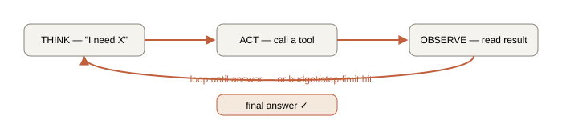

Chapter 10. Agents & multi-agent orchestration
An agent is an LLM in a loop with tools and a goal, deciding its own next action each step. This chapter builds one in ~80 lines of real TypeScript so the "magic" dissolves, then covers routing and multi-agent patterns — and, just as importantly, when NOT to use agents, which is a more senior answer than knowing how to build them.
10.1 The ReAct loop

A ReAct agent in ~40 lines (full version with tracing in the lab)
type Tool = { name: string; description: string; run: (args: any) => Promise<string> };
async function runAgent(goal: string, tools: Tool[], maxSteps = 6): Promise<string> {
const messages = [{ role: "system", content: systemPrompt(tools) },
{ role: "user", content: goal }];
for (let step = 0; step < maxSteps; step++) { // THE BOUND — never an unbounded while(true)
const reply = await callModel(messages, { tools });
if (reply.toolCall) { // ACT
const tool = tools.find(t => t.name === reply.toolCall.name);
const result = await tool!.run(reply.toolCall.args); // OBSERVE
messages.push(reply, { role: "tool", content: result });
} else {
return reply.content; // model decided it's done
}
}
return "Stopped: step budget exhausted. Best-effort answer: " + /* summarize */ "";
}That loop is an agent. Frameworks (LangGraph, the Vercel AI SDK's agent helpers) add state machines, persistence, retries, and parallelism — but you should build the raw loop once so you know exactly what they abstract, and can debug when they misbehave.
10.2 Routing — the cheapest high-value pattern
A router classifies the incoming request and dispatches it: simple FAQ → cheap model, direct answer; code question → code-retrieval pipeline; math → calculator tool. Benefits: use an expensive model only when needed (big cost savings), and send each query to the pipeline built for it. RepoSage's router deciding "this needs the history agent + code agent" is exactly this. A router is often a single cheap classification call returning a JSON schema — high leverage, low complexity.
10.3 Multi-agent patterns — and the hype warning
| Pattern | Shape | Good for |
|---|---|---|
| Orchestrator–workers | A manager decomposes the task, specialist agents do parts, manager combines | Tasks with separable subtasks (RepoSage: code/history/docs agents) |
| Critic / reviewer | One agent drafts, a second grades and can demand a retry | Quality-critical output; catches hallucination (RepoSage's critic) |
| Parallel + vote | Several agents attempt independently; aggregate/vote | Reducing variance on hard reasoning |
| Sequential pipeline | Fixed stages, each an LLM step | Most "agentic" tasks that are actually workflows |
10.4 Making agents reliable
- Bound everything: max steps, token budget, wall-clock timeout. Always have a terminal branch that answers honestly when the budget runs out.
- Handle tool failures: tools error, time out, return junk. The agent must catch, possibly retry, and degrade gracefully — not crash or loop.
- Make it observable: stream each think/act/observe step to a trace (and, for a portfolio piece, to the UI — visible reasoning is a huge demo win).
- Constrain the action space: fewer, well-described tools beat many overlapping ones; the model chooses better and can be manipulated less (security — Chapter 11).
labs/10-agent/ — build the ReAct agent from scratch with three tools (your RAG pipeline, a calculator, web search), add a critic step that grades groundedness and triggers one bounded retry, stream the reasoning trace, then rebuild it in LangGraph.js and compare. npm run lab10.Interview ammunition
What is an LLM agent, precisely?
An LLM in a loop with tools and a goal, where the model decides each step whether to call a tool or finish — reason, act, observe, repeat (ReAct). The model never executes anything itself; your code runs the tools and feeds results back. Distinguish from a workflow, where the steps are fixed by you and the LLM just fills each step — agents choose their own path, which is more powerful and more failure-prone.
When would you NOT use an agent?
When the task decomposes into predictable steps — then a workflow is cheaper, faster, and more reliable. Agents add cost, latency, and compounding error (each dynamic step can go wrong and errors multiply), so reserve autonomy for genuinely unpredictable tasks where you can't pre-define the path. Anthropic's own guidance is to prefer workflows and add agency sparingly. Demonstrating restraint here reads as more senior than showing off a complex multi-agent build.
How do you keep an agent from looping forever or blowing the budget?
Hard bounds: max steps, token budget, wall-clock timeout, plus a terminal "answer with what I have / say I couldn't" branch. Catch and handle tool errors rather than retrying blindly. Constrain the tool set so the action space is small. And trace every step so you can see where a run went sideways. The loop must be for (step < max), never while(true).
Why does reliability degrade in multi-step agents, mathematically?
Errors compound across dependent steps: if each step is 90% reliable and five must all succeed, end-to-end reliability is 0.9⁵ ≈ 0.59. That's why fewer steps, checkpoints/critics that catch errors mid-run, and workflows over open-ended agents all improve reliability — you're fighting a multiplicative decay. It's also why a critic/reviewer agent that can veto and retry is often worth its cost.
What does a framework like LangGraph give you over a hand-rolled loop?
Explicit state-machine structure (nodes/edges), persistence and resumability, built-in retries and parallelism, and streaming/observability hooks — useful once agents get complex or need durability. The trade-off is a learning curve and less transparency. I'd hand-roll the loop first to understand the mechanics, then adopt a framework when the state management and durability genuinely pay for themselves.
Whiteboard summary
Agent = LLM + tools + goal in a loop: THINK → ACT → OBSERVE → repeat (ReAct). Model requests, your code executes.
Loop must be bounded (max steps/tokens/time) + terminal honest branch.
Router = cheap classify + dispatch (huge value/cost). Patterns: orchestrator-workers, critic, vote, pipeline.
Workflow (fixed steps) > agent (dynamic) for most tasks — errors compound (0.9⁵≈0.59). Add agency sparingly.
Reliability = bounds + tool-error handling + small action space + tracing.
Further reading
- ReAct paper (2022) · Anthropic — Building Effective Agents (essential; when NOT to)
- LangGraph.js · Vercel AI SDK — agents